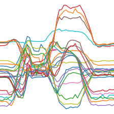
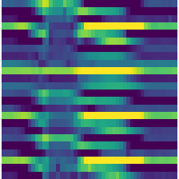
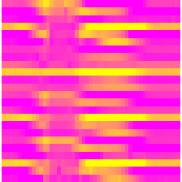
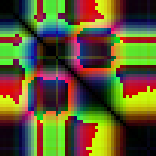
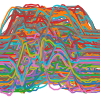
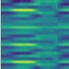
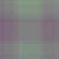
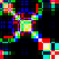
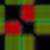

dsid = 'NATOPS'
X, y, splits = get_UCR_data(dsid, return_split=False)Imaging Time Series
Main functions used to transform time series into TSImage tensors.
ToTSImage
ToTSImage (enc=None, dec=None, split_idx=None, order=None)
Delegates (__call__,decode,setup) to (encodes,decodes,setups) if split_idx matches
TSImage
TSImage (x, **kwargs)
A Tensor which support subclass pickling, and maintains metadata when casting or after methods
TSToPlot
TSToPlot (size:Optional[int]=224, dpi:int=100, lw=1, **kwargs)
Transforms a time series batch to a 4d TSImage (bs, n_vars, size, size) by creating a matplotlib plot.
out = TSToPlot()(TSTensor(X[:2]), split_idx=0)
print(out.shape)
out[0].show()torch.Size([2, 3, 224, 224])
TSToMat
TSToMat (size=224, dpi=100, cmap=None, **kwargs)
Transforms a time series batch to a 4d TSImage (bs, n_vars, size, size) by creating a matplotlib matrix. Input data must be normalized with a range(-1, 1)
out = TSToMat()(TSTensor(X[:2]), split_idx=0)
print(out.shape)
out[0].show()torch.Size([2, 3, 224, 224])
out = TSToMat(cmap='spring')(TSTensor(X[:2]), split_idx=0)
print(out.shape)
out[0].show()torch.Size([2, 3, 224, 224])
TSToJRP
TSToJRP (size=224, cmap=None, dimension=1, time_delay=1, threshold=None, percentage=10)
Transforms a time series batch to a 4d TSImage (bs, n_vars, size, size) by applying Joint Recurrence Plot
TSToRP
TSToRP (size=224, cmap=None, dimension=1, time_delay=1, threshold=None, percentage=10, flatten=False)
Transforms a time series batch to a 4d TSImage (bs, n_vars, size, size) by applying Recurrence Plot. It requires input to be previously normalized between -1 and 1
TSToMTF
TSToMTF (size=224, cmap=None, n_bins=5, image_size=1.0, strategy='quantile', overlapping=False, flatten=False)
Transforms a time series batch to a 4d TSImage (bs, n_vars, size, size) by applying Markov Transition Field
TSToGASF
TSToGASF (size=224, cmap=None, range=None, image_size=1.0, sample_range=(-1, 1), method='summation', overlapping=False, flatten=False)
Transforms a time series batch to a 4d TSImage (bs, n_vars, size, size) by applying Gramian Angular Summation Field. It requires either input to be previously normalized between -1 and 1 or set range to (-1, 1)
TSToGADF
TSToGADF (size=224, cmap=None, range=None, image_size=1.0, sample_range=(-1, 1), method='summation', overlapping=False, flatten=False)
Transforms a time series batch to a 4d TSImage (bs, n_vars, size, size) by applying Gramian Angular Difference Field. It requires either input to be previously normalized between -1 and 1 or set range to (-1, 1)
out = TSToRP()(TSTensor(X[:2]), split_idx=0)
print(out.shape)
out[0].show()torch.Size([2, 24, 224, 224])
o = TSTensor(X[0][1][None])
encoder = RecurrencePlot()
a = encoder.fit_transform(o.cpu().numpy())[0]
o = TSTensor(X[0])
encoder = RecurrencePlot()
b = encoder.fit_transform(o.cpu().numpy())[1]
test_eq(a,b) # channels can all be processed in paralleltest_eq(TSToRP()(TSTensor(X[0]), split_idx=False)[0], TSToRP()(TSTensor(X[0][0][None]), split_idx=False)[0])
test_eq(TSToRP()(TSTensor(X[0]), split_idx=False)[1], TSToRP()(TSTensor(X[0][1][None]), split_idx=False)[0])
test_eq(TSToRP()(TSTensor(X[0]), split_idx=False)[2], TSToRP()(TSTensor(X[0][2][None]), split_idx=False)[0])dsid = 'NATOPS'
X, y, splits = get_UCR_data(dsid, return_split=False)
tfms = [None, Categorize()]
bts = [[TSNormalize(), TSToPlot(100)],
[TSNormalize(), TSToMat(100)],
[TSNormalize(), TSToGADF(100)],
[TSNormalize(), TSToGASF(100)],
[TSNormalize(), TSToMTF(100)],
[TSNormalize(), TSToRP(100)]]
btns = ['Plot', 'Mat', 'GADF', 'GASF', 'MTF', 'RP']
dsets = TSDatasets(X, y, tfms=tfms, splits=splits)
for i, (bt, btn) in enumerate(zip(bts, btns)):
dls = TSDataLoaders.from_dsets(dsets.train, dsets.valid, bs=8, batch_tfms=bt)
test_eq(dls.vars, 3 if i <2 else X.shape[1])
test_eq(dls.vars, 3 if i <2 else X.shape[1])
test_eq(dls.len, (100,100))
xb, yb = dls.train.one_batch()
print(i, btn, xb, xb.dtype, xb.min(), xb.max())
xb[0].show()
plt.show()0 Plot TSImage(shape:torch.Size([8, 3, 100, 100])) torch.float32 0.054901961237192154 1.0
1 Mat TSImage(shape:torch.Size([8, 3, 100, 100])) torch.float32 0.019607843831181526 1.0
2 GADF TSImage(shape:torch.Size([8, 24, 100, 100])) torch.float32 2.980232238769531e-07 0.9999997019767761
3 GASF TSImage(shape:torch.Size([8, 24, 100, 100])) torch.float32 0.0 0.9383022189140324 MTF TSImage(shape:torch.Size([8, 24, 100, 100])) torch.float32 0.0 1.0
5 RP TSImage(shape:torch.Size([8, 24, 100, 100])) torch.float32 0.0 0.8106333613395691
The simplest way to train a model using time series to image transforms is this:
dsid = 'NATOPS'
X, y, splits = get_UCR_data(dsid, return_split=False)
tfms = [None, Categorize()]
batch_tfms = [TSNormalize(), TSToGADF(224)]
dls = get_ts_dls(X, y, splits=splits, tfms=tfms, batch_tfms=batch_tfms)
learn = tsimage_learner(dls, xresnet34)
learn.fit_one_cycle(10)